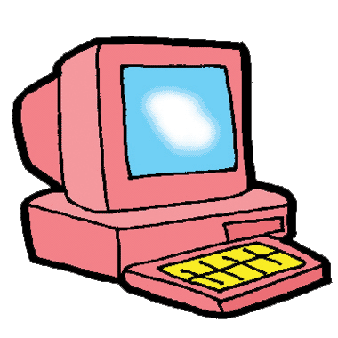

| |
| Ejemplos de webs que utilizan HTML5. |
|  |
|
HTML5 ha introducido una variedad de mejoras y nuevas etiquetas para lograr que los diseñadores web consigan una gran variedad de opciones interesantes para las que antes se requerían plugins como Flash.
Sin embargo, HTML5 aún está en curso de trabajo, y no se espera que esté totalmente aprobada hasta 2014. Hasta que el W3C complete este proceso, encontraremos una interesante evolución en la manera en que se construyen los sitios de Internet.
A continuación, he recopilado una lista de páginas web interesantes construidos mediante etiquetas HTML5. Quien sabe, puedes utilizarlos como inspiración para tu propia web. |
Sony Tablet Sony tiene una gran web HTML5 donde exhibe sus productos a través de un desplazamiento vertical de secciones donde imágenes, fondos y texto van apareciendo desde la parte inferior. Cuando el ratón está en la parte inferior de la página el cursor es seguido por un botón interactivo. Esta es una idea de navegación fresca y única. A la derecha, se puede navegar por las secciones utilizando un menú tradicional.
|
| |
| Regresar |
| |
|